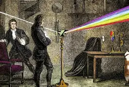

Muito antes de compreendermos a luz como conhecemos hoje, as cores já despertavam a curiosidade de cientistas. Ao longo dos séculos, diferentes descobertas revelaram como a luz branca pode se transformar em um conjunto de cores que formam o espectro visível.
Durante muito tempo, acreditava-se que as cores surgiam de diferentes maneiras. Essa ideia começou a mudar no século XVII, quando o cientista inglês Isaac Newton realizou experimentos com a luz solar e um prisma de vidro.
Em 1666, Newton demonstrou que a luz branca não era simplesmente incolor: ela era formada por várias cores. Ao atravessar um prisma, a luz se separava em diferentes tonalidades, revelando o espectro visível.
Essa experiência foi fundamental para a compreensão de que as cores estão presentes na própria luz, e não são criadas pelo prisma.

Newton realizou experimentos com prismas e demonstrou que a luz branca podia ser dividida em diferentes cores. Seu trabalho foi um dos principais marcos no estudo do espectro visível.
Newton apresentou à comunidade científica suas pesquisas sobre a natureza da luz e das cores, contribuindo para transformar a óptica em uma área de estudo mais desenvolvida.
O cientista observou linhas escuras no espectro solar, percebendo que a luz do Sol apresentava características que não eram explicadas apenas pela separação das cores.
Fraunhofer estudou detalhadamente as linhas escuras do espectro solar. Essas marcas ficaram conhecidas como linhas de Fraunhofer e ajudaram no desenvolvimento da espectroscopia.
Novos estudos sobre a luz permitiram compreender melhor sua natureza e suas propriedades, relacionando as cores à frequência e ao comprimento de onda.
Hoje sabemos que o espectro visível corresponde à pequena faixa do espectro eletromagnético que pode ser percebida pelos olhos humanos, aproximadamente entre 380 e 750 nanômetros.
Os estudos sobre o espectro visível transformaram nossa compreensão da luz e das cores. O que começou com simples experimentos utilizando prismas tornou-se uma das bases da física moderna, contribuindo para avanços na astronomia, na fotografia, na tecnologia e em diversas áreas da ciência.